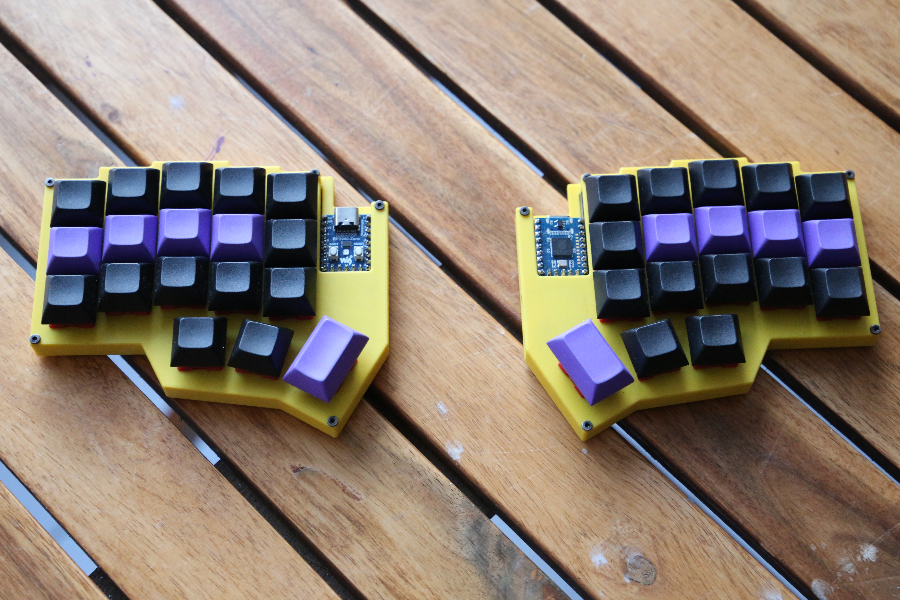
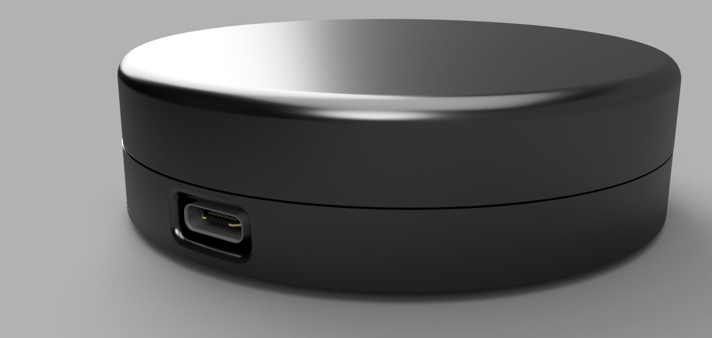
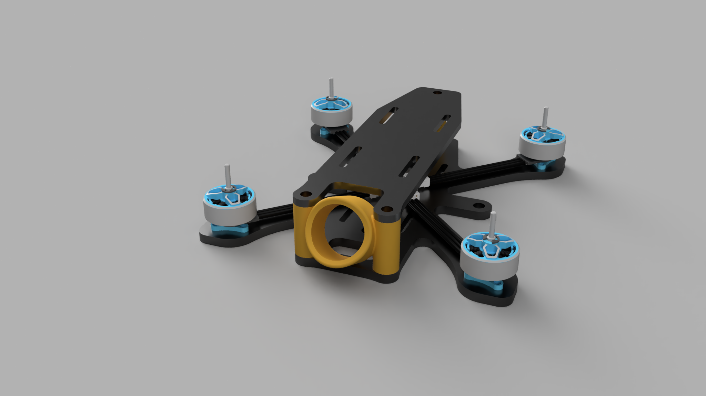
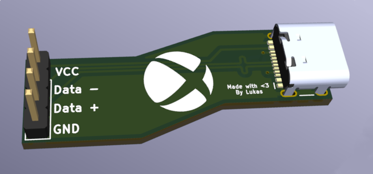
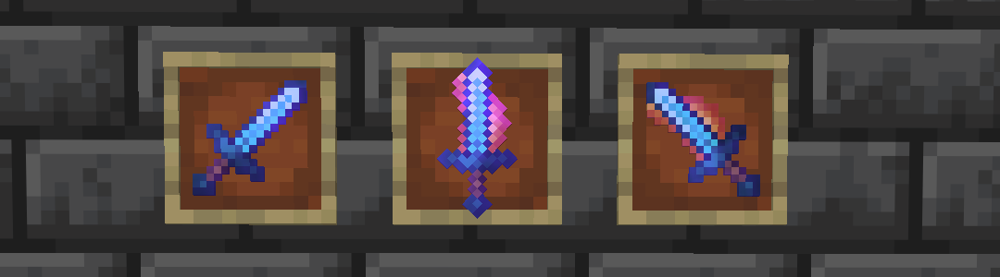

Projects

40%ish Split Keyboard
A fully custom 36 key wired split keyboard

Dial
A wireless smooth scrolling dial that uses a AS5600 sensor

FireFly Drone
A 75mm 1s tinywhoop custom frame

Xbox 360 USB-C MOD
A small breakout board that lets the Xbox 360 wired controller be USB C

Better Enchanted Tool Textures
Minecraft Resource pack with enchantment specific textures
6